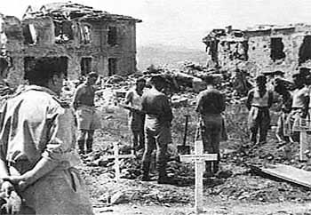

|
|
颂主新歌 |
|
Son of peace https://www.folksong.org.nz/tama_ngakau_marie/index.html
|
1.圣父，圣子，圣灵，天地同崇尊， |
|
颂主新歌054三一真神
|
|
|
|
|

https://youtu.be/JS2V_zEdyMI -
https://youtu.be/bsCmPR1OExc
| Text: | Father, Son and Spirit |
| Author: | D. T. Niles |
| Tune: | TAMA NGAKAU |
Tune Information
| Title: | TAMA NGAKAU MARIE |
| Place Of Origin: | New Zealand |
| Incipit: | 32165 35345 643 |
| Key: | F Major |
| Source: | Maori traditional melody, New Zealand |
| Copyright: | Public Domain |

D. T. Niles 1908 – 1970
|
Reverend
D. T. Niles
|
|
|---|---|
 |
|
| Born |
4 May 1908 |
| Died | 17 July 1970 (aged 62) |
| Alma mater |
Jaffna Central College United Theological College, Bangalore |
| Occupation | Pastor/Theologian |
Daniel Thambyrajah Niles (4 May 1908 – 17 July 1970) was a Ceylonese pastor, evangelist and president of the Ceylon Methodist Conference.
Early life and family[edit]
Niles was born on 4 May 1908 in Tellippalai in northern Ceylon.[1] He was the son of district judge W. D. Niles and Rani Muthamma.[2] He was educated at Jaffna Central College.[1][2] After school he received theological training at United Theological College, Bangalore between 1920 and 1933.[2]
Mailvaganam married Dulcie Solomons in 1935.[2] They had two sons (Preman and Wesley Dayalan).[2]
Career[edit]
After returning to Ceylon Niles taught at Jaffna Central College until 1936.[2] He was then ordained as a priest and became District Evangelist for the North District of the Methodist Church of Ceylon.[2]
Niles became general secretary of the National Christian Council of Ceylon.[2] He was chairman of the Youth Department of the World Council of Churches between 1948 and 1952.[2] He was appointed Executive Secretary of the Department of Evangelism in the World Council of Churches in 1953.[1] He also served as chairman of the World Student Christian Federation.[1] He was general secretary and later chairman of the East Asian Christian Conference.[1] He was also one of the presidents of the World Council of Churches.[1]
Niles was pastor of the Methodist Church in Point Pedro (1946–50); pastor at Maradana (1950–53); principal of Jaffna Central College (1956–62); and superintendent minister at St. Peter's Church, Jaffna (1953–59).[2] He was elected chairman of the North Ceylon Synod and president of the Ceylon Methodist Conference in 1964.[2] Niles wrote the hymn "The Great love of God is revealed in the Son".[3]
Death[edit]
Niles died on 17 July 1970.[2]
https://en.wikipedia.org/wiki/D._T._Niles
TAMA NGAKAU MARIE
Maori songs - Kiwi
songs - Home
|
|
 A member of the Maori Battalion is laid to rest at Cassino. |
|||
|
||||
https://www.folksong.org.nz/tama_ngakau_marie/index.html